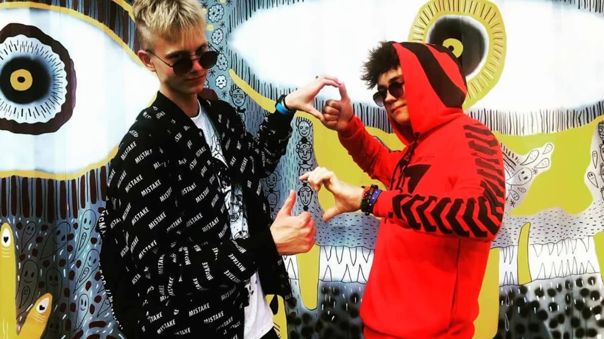

katės
About me

Past Articles
- Katės - ZooKaralyste.lt - naminių gyvūnėlių parduotuvė
Katės, Flora, fauna (681) + Įdėti skelbimą Įsiminti skelbimai (0) Skelbimų: 681 . Atnaujinti viršuje. Naujausi viršuje Atnaujinti viršuje Pigiausi viršuje Brangiausi viršuje. Vilnius. prieš 1 d. 2. Serengeti veislės kačiukai . Oficialus veislynas, registruotas VMVT, parduoda retos Serengeti veislės kačiukus su kilmės ... - Katės gyvūnai, augalai - Skelbiu.lt
Filmas Katės online (2019) lietuviskai nemokamai. Pamiršk kritikus. Pamirškite apžvalgas. Pamirškite viską, ką apie tai perskaitėte. (Išskyrus šį. - Katės
Katės + Zuikis + katiniukai + Naujokai + Su baltu + Katiniukas + Du + Dvi ryžiukės + Velniūkščiukas + Pilkutė žydra akyte + Pilku poplaukiu stebuklingu žvilgsniu:) + Karvuko brolis + Karvukas + Auksis + Meiniškai meškėniški pilkiai rainuoti + Juodulis + - Įdomūs faktai apie kates - PatarimuPasaulis.lt
Katės Singing Rock Fakir II semi-classic. Kaina 109,00 EUR. Katės Singing Rock Lucifer II tech. Kaina 149,00 EUR. Katės Singing Rock Fakir II classic. Kaina 99,00 EUR. Camp kačių apsaugos. Bazinė kaina 19,00 EUR Kaina 11,40 EUR-40%; Rodoma 1-16 iš 16 prekės(-ių) ... - Katės - Skelbimai - Noriugyvuno.lt
Katės stebina ir tuo, kad per gana trumpą laiką gali įveikti nemažus atstumus: pasakojama, kad vienas niujorkietis persikraustė į Kaliforniją, tačiau savo katę paliko Niujorke. Po penkių mėnesių katė atklydo prie savo šeimininko durų, įėjo į vidų, ir tiesiog susirangė savo mėgstamiausiame krėsle. Nuo Niujorko iki ... - Katės - Gyvūnų globa
Katės Puslapis naudojasi cookie failais įgyvendinti paslaugas sutampačias su Cookies Failų Politika . Galite nurodyti saugojimo arba prieigos sąlygas Cookies Failams Jūsų naryšyklėje. - Abisinijos katės (Abyssinian) - Augintinis
Mūsų katės Pristatykime savo kates: 7: 50: Sk. 01 23, 2011 12:32 am dragute ... - katės - išsamiai DELFI.lt
Katės. Mes turime mieli Ragdoll kačiukai. bet svarbiausia, kad kačiukai turi gražų atsineštą temperamentą ir mielas asmenybes, tokias kaip jų tėvai. Siūlo. Vilnius. Vasario 21. Mieli persų kačiukai nemokamai įvaikinti. Katės. Du žavūs, meilūs persų kačiukai, paruošti naujiems namams! Visi yra unikalios spalvos, asmenybės ... - Katės - Expedition
Kiek metu gyvena katės? 11.11.2019 19.01.2020 Daiva Šiuolaikinė katė gyvena daug ilgiau, nei gyveno jos protėviai dar prieš 20 metų. Per šį laikotarpį, kačių gyvenimo trukmė išaugo maždaug 6-7 metais. Taip yra dėl to, kad šeimininkai pradėjo skirti daugiau dėmesio savo augintiniams, rūpintis jų sveikata, lankytis pas ... - Kodėl katės nuolatos minko letenėlėmis - DELFI Letena
Katės. Mieliausias gyvūnų skelbimų portalas! Dovanojami gyvūnai, šunys, katės, papūgos, triušiai, žiurkėnai, šinšilos, vėžliai ir kiti ropliai ...
Menu
- Katės - ZooKaralyste.lt - naminių gyvūnėlių parduotuvė
- Katės gyvūnai, augalai - Skelbiu.lt
- Katės
- Įdomūs faktai apie kates - PatarimuPasaulis.lt
- Katės - Skelbimai - Noriugyvuno.lt
- Katės - Gyvūnų globa
- Abisinijos katės (Abyssinian) - Augintinis
- katės - išsamiai DELFI.lt
- Katės - Expedition
- Kodėl katės nuolatos minko letenėlėmis - DELFI Letena
Gyvūnų globa | Katės

Pagrindinis Ieško namų gyvūnai Šunys Katės Kiti gyvūnai Radę namus Išlydėti Apie mus Gal galite mus paremti? Kontaktai Pagrindinis Ieško namų gyvūnai Šunys Katės Kiti gyvūnai Radę namus Išlydėti Apie mus Gal galite mus paremti? Kontaktai Katės
+katiniukai
+Su baltu
+Du
+Velniūkščiukas
+Pilku poplaukiu stebuklingu žvilgsniu:)
+Karvukas
+Juodulis
+Ryžiukas
+Trispalvė
+Kelmutis
+Belen kokie
+Ryžiukės
+Pūkis juodas juodas
+Dvi katytės
+Labanoriukai baltas nosiukas
+Kirdeikiukai
+Raina-juoda šeimyna
+Dviese
+Juoduliai
+Baltas
+Rainiukas švelniakailis
+Rainiukas
+Pūkė
+Kontikis
+Puošnybė verslininkas
+Raina tobulybė
+Šviesi trispalvė
+Ryžiukai ir Trispalvės
+Šanti ir jos mažyliai
+Rainiukė
+Subačiukai juoda balta papūkuoti
+Shanti
+Katinukas
+Rainiukas apvaliagalvis Dusetos
+Rubė
+Papūkuota
+Bonita
+Dryžė
+Samanta Pūkė
+Saulės Bučinukai
+Benina
+Juodulis
+Iš juodųjų
+Tamsioji
+Persis
+Karvukas
+Šlepečiukai rainas
+Andrėja
+Meškiukas
+Juodos Naktelės dvi seselės
+Gina
+Raina mažylė
+Margiukai
+Beveik meili
+Nedrąsutis
+Šleivytė
+Kobrytės brolis stambesnysis
+Raina Bangelė
+Siama
+Juodulis
+Tvista
+Rundelis
+Troja
Kontaktai
+370 612 32962 (vadovė Jolanta)
+370 612 32964 (darbuotojos globos namuose Danguolė arba Rimantė)
info@gyvunugloba.com
J. Basanavičiaus g. 118, Utena LT-28214
Copyright 2018 © Utenos rajono gyvūnų mylėtojų draugija starflix
Posted by Jack  Read more
Read more  Comments (15)
Comments (15)  2020.10.30 06:09
2020.10.30 06:09